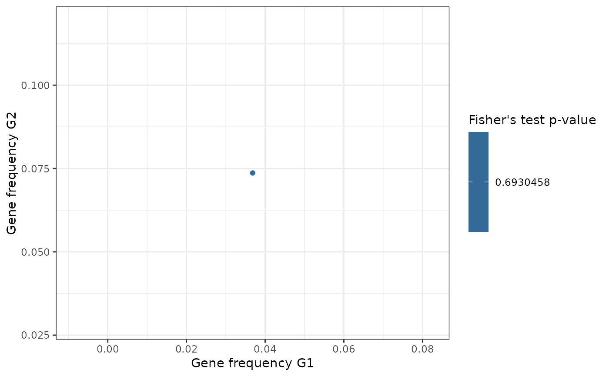

Plot results of gene frequency Fisher's exact test.
Source:R/plotting-functions.R
fisher_scatterplot.Rd![[Stable]](figures/lifecycle-stable.svg) Plots results of Fisher's exact test on gene frequency obtained via
Plots results of Fisher's exact test on gene frequency obtained via
gene_frequency_fisher() as a scatterplot.
Usage
fisher_scatterplot(
fisher_df,
p_value_col = "Fisher_p_value_fdr",
annot_threshold = 0.05,
annot_color = "red",
gene_sym_col = "GeneName",
do_not_highlight = NULL,
keep_not_highlighted = TRUE
)Arguments
- fisher_df
Test results obtained via
gene_frequency_fisher()- p_value_col
Name of the column containing the p-value to consider
- annot_threshold
Annotate with a different color if a point is below the significance threshold. Single numerical value.
- annot_color
The color in which points below the threshold should be annotated
- gene_sym_col
The name of the column containing the gene symbol
- do_not_highlight
Either
NULL, a character vector, an expression or a purrr-style lambda. Tells the function to ignore the highlighting and labeling of these genes even if their p-value is below the threshold. See details.- keep_not_highlighted
If present, how should not highlighted genes be treated? If set to
TRUEpoints are plotted and colored with the chosen color scale. If set toFALSEthe points are removed entirely from the plot.
Details
Specifying genes to avoid highlighting
In some cases, users might want to avoid highlighting certain genes
even if their p-value is below the threshold. To do so, use the
argument do_not_highlight: character vectors are appropriate for specific
genes that are to be excluded, expressions or lambdas allow a finer control.
For example we can supply:
expr <- rlang::expr(!stringr::str_starts(GeneName, "MIR") &
average_TxLen_1 >= 300)with this expression, genes that have a p-value < threshold and start with
"MIR" or have an average_TxLen_1 lower than 300 are excluded from the
highlighted points.
NOTE: keep in mind that expressions are evaluated inside a dplyr::filter
context.
Similarly, lambdas are passed to the filtering function but only operate on the column containing the gene symbol.
lambda <- ~ stringr::str_starts(.x, "MIR")See also
Other Plotting functions:
CIS_volcano_plot(),
HSC_population_plot(),
circos_genomic_density(),
integration_alluvial_plot(),
sharing_heatmap(),
sharing_venn(),
top_abund_tableGrob(),
top_cis_overtime_heatmap()
Examples
data("integration_matrices", package = "ISAnalytics")
data("association_file", package = "ISAnalytics")
aggreg <- aggregate_values_by_key(
x = integration_matrices,
association_file = association_file,
value_cols = c("seqCount", "fragmentEstimate")
)
cis <- CIS_grubbs(aggreg, by = "SubjectID")
#> Warning: Warning: missing genes in refgenes table
#> ℹ A total of 5 genes were found in the input data but not in the refgene table. This may be caused by a mismatch in the annotation phase of the matrix. Here is a summary:
#> # A tibble: 5 × 3
#> GeneName GeneStrand chr
#> <chr> <chr> <chr>
#> 1 PLEKHG4B - 14
#> 2 CRELD2 - 15
#> 3 UBE2D2 + 16
#> 4 LINC01133 + 19
#> 5 HTR4 + 6
#> ℹ NOTE: missing genes will be removed from the final output! Review results carefully
#> ℹ A total of 25 IS will be removed because of missing genes ( 2.33 % of total IS in input)
fisher <- gene_frequency_fisher(cis$cis$PT001, cis$cis$PT002,
min_is_per_gene = 2
)
fisher_scatterplot(fisher)
